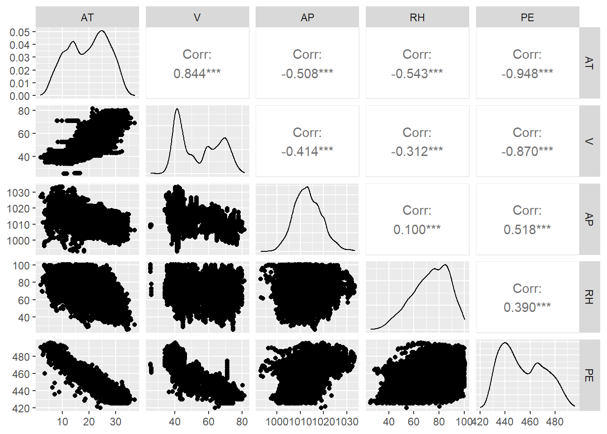

library(tidyverse)
library(tidymodels)
library(parsnip)
library(correlationfunnel)
# Pre processing & Sampling
library(recipes)
library(rsample)
library(yardstick)Coursera AI Product Management: Final Project
Combined Cycle Power Plant
Read Data in to RStudio
tbl <- read_csv(file = "ML_basics_files/CCPP_data.csv")
dim(tbl)[1] 9568 5Head of Data
head(tbl,n = 10) %>% knitr::kable()| AT | V | AP | RH | PE |
|---|---|---|---|---|
| 14.96 | 41.76 | 1024.07 | 73.17 | 463.26 |
| 25.18 | 62.96 | 1020.04 | 59.08 | 444.37 |
| 5.11 | 39.40 | 1012.16 | 92.14 | 488.56 |
| 20.86 | 57.32 | 1010.24 | 76.64 | 446.48 |
| 10.82 | 37.50 | 1009.23 | 96.62 | 473.90 |
| 26.27 | 59.44 | 1012.23 | 58.77 | 443.67 |
| 15.89 | 43.96 | 1014.02 | 75.24 | 467.35 |
| 9.48 | 44.71 | 1019.12 | 66.43 | 478.42 |
| 14.64 | 45.00 | 1021.78 | 41.25 | 475.98 |
| 11.74 | 43.56 | 1015.14 | 70.72 | 477.50 |
The Data has four features to predict the target variable (PE) which is the hourly electrical output.
Check for Missing Values
library(DataExplorer)
introduce(tbl) %>% knitr::kable()| rows | columns | discrete_columns | continuous_columns | all_missing_columns | total_missing_values | complete_rows | total_observations | memory_usage |
|---|---|---|---|---|---|---|---|---|
| 9568 | 5 | 0 | 5 | 0 | 0 | 9568 | 47840 | 384632 |
GGally::ggpairs(tbl)
Plot Correlation Funnel
tbl %>% correlate(target = PE) %>% plot_correlation_funnel(interactive = TRUE)Prep the data for Modeling
set.seed(1113)
split_obj <- rsample::initial_split(data = tbl,prop = 0.8)
train_tbl <- training(split_obj)
test_tbl <- testing(split_obj)
dim(train_tbl)[1] 7654 5dim(test_tbl)[1] 1914 5This is a regression problem, we have to build a model to predict the PF value , considering AT and V are heavily correlated with the target variable, they can have an significant influence in the model.
Model 1 Linear Regression with all 4 Features
model_01_linear_lm_simple <- linear_reg(mode = "regression") %>%
set_engine("lm") %>%
fit(PE ~ ., data = train_tbl)
summary(model_01_linear_lm_simple) Length Class Mode
lvl 0 -none- NULL
spec 5 linear_reg list
fit 12 lm list
preproc 1 -none- list
elapsed 1 -none- listmodel_01_linear_lm_simple$fit %>%
broom::tidy() %>%
arrange(p.value) %>%
mutate(term = as_factor(term) %>% fct_rev()) %>% knitr::kable(digits = 5)| term | estimate | std.error | statistic | p.value |
|---|---|---|---|---|
| (Intercept) | 445.94991 | 10.90914 | 40.87857 | 0 |
| AT | -1.96840 | 0.01699 | -115.86931 | 0 |
| RH | -0.15221 | 0.00461 | -32.99724 | 0 |
| V | -0.23232 | 0.00808 | -28.76309 | 0 |
| AP | 0.06994 | 0.01059 | 6.60568 | 0 |
MODEL 2 , Linear Regression with Selected Features
model_02_linear_lm_simple <- linear_reg(mode = "regression") %>%
set_engine("lm") %>%
fit(PE ~ AT + AP + RH, data = train_tbl)Model Summary
model_02_linear_lm_simple$fit %>%
broom::tidy() %>%
arrange(p.value) %>%
mutate(term = as_factor(term) %>% fct_rev()) %>% knitr::kable(digits = 5)| term | estimate | std.error | statistic | p.value |
|---|---|---|---|---|
| (Intercept) | 482.98866 | 11.40293 | 42.35655 | 0.00000 |
| AT | -2.36600 | 0.01039 | -227.62088 | 0.00000 |
| RH | -0.19697 | 0.00457 | -43.09100 | 0.00000 |
| AP | 0.03189 | 0.01106 | 2.88443 | 0.00393 |
Penalised Regression , Mixture = 0, Ridge
model_03_linear_glmnet <- linear_reg(mode = "regression", penalty = 5, mixture = 0) %>%
set_engine("glmnet") %>%
fit(PE ~ .,data = train_tbl)model_03_linear_glmnet$fit %>%
broom::tidy() %>%
filter(dev.ratio == max(dev.ratio)) %>%
# Changes in Parsnip, multiple steps now calculated
arrange(desc(estimate)) %>%
mutate(term = as_factor(term) %>% fct_rev()) %>% drop_na()# A tibble: 5 × 5
term step estimate lambda dev.ratio
<fct> <dbl> <dbl> <dbl> <dbl>
1 (Intercept) 100 279. 1.61 0.918
2 AP 100 0.226 1.61 0.918
3 RH 100 -0.0491 1.61 0.918
4 V 100 -0.396 1.61 0.918
5 AT 100 -1.42 1.61 0.918Final Model , Lasso , Mixture = 1
model_04_linear_glmnet <- linear_reg(mode = "regression", penalty = 5, mixture = 1) %>%
set_engine("glmnet") %>%
fit(PE ~ .,data = train_tbl)Model Metrics
model_04_linear_glmnet$fit %>%
broom::tidy() %>%
filter(dev.ratio == max(dev.ratio)) %>%
# Changes in Parsnip, multiple steps now calculated
arrange(desc(estimate)) %>%
mutate(term = as_factor(term) %>% fct_rev()) %>% drop_na()# A tibble: 5 × 5
term step estimate lambda dev.ratio
<fct> <dbl> <dbl> <dbl> <dbl>
1 (Intercept) 63 446. 0.0504 0.929
2 AP 63 0.0692 0.0504 0.929
3 RH 63 -0.144 0.0504 0.929
4 V 63 -0.235 0.0504 0.929
5 AT 63 -1.95 0.0504 0.929Output Metrics
Model 1 Linear Regression
model_01_linear_lm_simple %>%
predict(new_data = test_tbl) %>%
bind_cols(test_tbl %>% select(PE)) %>%
yardstick::metrics(truth = PE , estimate = .pred)%>% knitr::kable(digits = 5)| .metric | .estimator | .estimate |
|---|---|---|
| rmse | standard | 4.62267 |
| rsq | standard | 0.92910 |
| mae | standard | 3.67394 |
Model 2 Linear Regression , 3 Features
model_02_linear_lm_simple %>%
predict(new_data = test_tbl) %>%
bind_cols(test_tbl %>% select(PE)) %>%
yardstick::metrics(truth = PE , estimate = .pred)%>% knitr::kable(digits = 5)| .metric | .estimator | .estimate |
|---|---|---|
| rmse | standard | 4.86349 |
| rsq | standard | 0.92151 |
| mae | standard | 3.84931 |
Model 3, GLMNET Penalized Linear Regression , Ridge
model_03_linear_glmnet %>%
predict(new_data = test_tbl) %>%
bind_cols(test_tbl %>% select(PE)) %>%
yardstick::metrics(truth = PE , estimate = .pred)%>% knitr::kable(digits = 5)| .metric | .estimator | .estimate |
|---|---|---|
| rmse | standard | 5.75949 |
| rsq | standard | 0.90548 |
| mae | standard | 4.61485 |
Model 3, GLMNET Penalized Linear Regression , Lasso
model_04_linear_glmnet %>%
predict(new_data = test_tbl) %>%
bind_cols(test_tbl %>% select(PE)) %>%
yardstick::metrics(truth = PE , estimate = .pred)%>% knitr::kable(digits = 5)| .metric | .estimator | .estimate |
|---|---|---|
| rmse | standard | 7.40497 |
| rsq | standard | 0.90849 |
| mae | standard | 6.13994 |